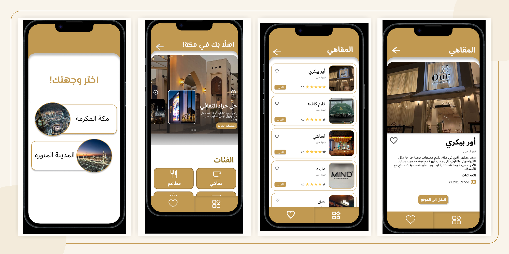

5 — UX/UI · TOURIST GUIDE · COOPERATIVE TRAINING
Pilgrim City Guide
A 40% complete concept for a pilgrim guide to Makkah and Madinah, created during cooperative training.

A concept created during cooperative training at Al Rajhi Supporting Services Company to help pilgrims after arriving in Makkah and Madinah by discovering restaurants, leisure places, and useful destinations.
The supervisor asked the team to create a pilgrim city guide. Each team member created an individual version to present to the supervisor, and one version would be selected.
My version was completed to around 40%, enough to communicate the concept and direction for review. It was not selected as the final version, but the work remains available as a Figma prototype.
The concept focused on making it easier for pilgrims to discover places and make choices while navigating Makkah and Madinah.